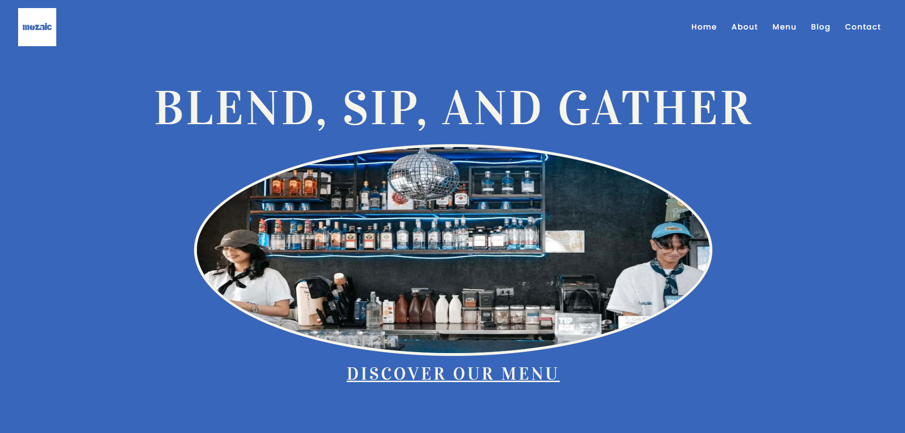

Mozaic Café, Bar + Kitchen Website
A fully functional business website developed for Mozaic Café, Bar + Kitchen using WordPress and hosted on Hostinger. The website showcases the café’s menu, brand identity, blog content, and contact information while implementing modern SEO and performance optimization practices.
Technologies Used:
My Role:
Lead WordPress developer and SEO implementer. Responsible for website structure, theme customization, performance optimization, technical SEO setup, and analytics configuration.
Key Contributions:
- Customized WordPress theme to align with Mozaic’s branding
- Implemented on-page SEO including meta titles, descriptions, and image ALT text
- Improved PageSpeed performance for both mobile and desktop
- Configured Google Analytics and XML sitemap
- Structured pages: Home, About, Menu, Blog, and Contact